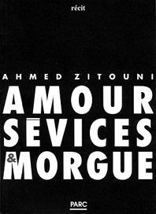

|
Ahmed Zitouni  96 pages, éd. Parc - 10,67 E - ISBN 978-2-912010-07-1 "CRETEIL : l'autodestruction de Malik Boudaoud a laissé six cadavres. Séparé de sa femme, il a tué son beau-père, sa belle-soeur et ses trois enfants avant de retouner son P38 contre lui." Ahmed Zitouni est né à Saïda (Algérie) en 1949. Il vit en France depuis 1973. Il a publié plusieurs romans dont Attilah Fakir (prix de l'Evénement du Jeudi) et un essai. Amour, sévices et morgue s'inspire d'un fait divers de façon saissisante.(Extrait) La mère de ses enfants,
épargnée par les coups de feu, hurle : Pourquoi, en guise de bonne année, occire son beau-père, puis sa belle-soeur ? Et pourquoi épargner sa femme et sa belle-mère ? Et pourquoi avoir zigouillé cet oesophage en déliquescence, ainsi qu'une innocente au corsage fleuri à ras bord ? Longtemps, je me suis torturé la cervelle. J'ai soupesé nombre d'hypothèses et incarné mille et mille rôles droit sortis des plus échevelés registres d'horreur. J'improvisais en pensée, en folie douce, en abjection domestiquée. J'improvisais. Revenais. M'attardais. Jouissance et dégoût. Aucune honte. J'improvisais. Entrais en interdit. Me mettais à sa place, pour de faux, pour en rire. Tenter de le comprendre... sans vraiment y croire. Espérer... et encore, faute de mieux. M'aventurer dans un inconnu si particulier, dans ces friches humaines où il avait fini, me terrifiait. Monstruosité singulière. Un diamant noir d'humanité sans limites. Des années, des angoisses plus tard, j'habite encore un vivre fait de suaves répulsions, d'inavouables plaisirs. Mes sommeils sont souvent déchirés de cris et de mains fouettant le vide. Les blessures sont amour. Le sourire de Malik continue de clignoter derrière des voiles de néant. Je grelotte de temps à autre, ouvre les yeux ou feins de me rendormir. À quoi bon le traquer encore. Me penser dépositaire de je ne sais quelle occulte procuration. Ridicule ! Même pas l'illusion d'un tardif témoignage. Et pourtant la certitude de l'existence de liens étranges, d'une mission extraordinaire, des ondes et des appels entre une fosse commune et ma table de travail, l'encre noire de ma plume et ses ongles évaporés en boussoles errantes. Un contrat d'horreur et d'exaspération. Pendu à son bon vouloir. Il me hante et je le renie. Je le hais et il me réveille. Insiste. M'appelle à la tâche. Rien à prouver. Aucune vérité à exhumer. Comprendre. Seulement comprendre. Se leurrer à la commande. Qu'importe ! Je ne le ménagerai plus. Le traquerai à la trace. Le rédigerai à l'émotion. Le raturerai de toute géographie connue. En ferai un cocu de l'histoire, celle des analphabètes, et l'autre aussi. Me vengerai de lui. L'empêcherai de me repasser par la tête. Expierai en lui. Le réincarnerai au hasard d'une ressemblance, d'une fraternité avouée, reconnue. Le comprendre. Tutoyer sa morgue figée en lucidité définitive. M'y habituer. L'apprivoiser. Et à chaque incursion, dans ce que j'aurai échafaudé avoir été lui, ressortir une fois de plus épuisé, vidé, plus mort que jamais, ivre de douleur nue, assoiffé de vie. C'est fou, le nombre de pistolets sommeillant dans des plumiers d'enfance ! Et qui, à la plus lointaine évocation, ne demandent qu'à partir. S'habiller de la grenaille des mots. S'éparpiller en vertige. Malik avait sûrement des yeux noirs. Des yeux de dégourdi, veloutés et brillants, toujours en mouvement. Des cheveux bouclés. Des mains de pianiste ou de voleur, faites pour récupérer et tuer. J'avoue m'être souvent laissé tenter. Me fondant dans des images de passage. Transitant dans l'assassin du jour, quelque chose de lui en retour. Troquant une de mes folies de rien pour l'ombre de ses aumônes de lucidité. Me brûlant à un tournant de mémoire. Lui ouvrant des réhabilitations posthumes. Lui traçant une fin de course plus raisonnable, quelque scénario de sortie plus acceptable, une fin de partie plus ordinaire, plus humble et moins animale dans son déroulement. Quelque chose comme une scène de ménage, avec les éclats de voix d'une rupture consommée. une porte qui claque. Un sanglot. Le silence. J'avoue avoir voulu me le rendre plus proche. Plus excusable... Qui sait ! Même si ce qu'il avait fait me demeurait absolument inexcusable, et combien compréhensible. Mais son écho d'au-delà me ricanait à la devanture. Son énigme continuait de scintiller de tous ses feux. Son mystère tourmentait en braise lancinante. Revenant sur un carnage annoncé, je lui ai suggéré de commencer par la belle-mère, victime expiatoire s'il en est. Une balle dans le coeur, son absence, ou ses annexes. Impossible de ne pas faire mouche : la baleine avait de la présence. Viser, appuyer, et la gratifier de l'attaque cardiaque de ses inavouées espérances. Une vraie de vraie. Avec remords de dernière minute accrochés en moue de bouche. Yeux chavirés. Dernières volontés exhalées en râle. Étouffement et fer rouge inséré dans le palpitant. La regarder crever. La broder du regard. Peut-être avec la secrète intention d'inciter Malik à repenser à sa mère, ou à la mienne, une féminité flétrie, tôt trucidée, morte avant d'avoir vécu. N'en décliner qu'un rire. Puis vite revenir au monde. Chasser le souvenir indélicat. Passer ensuite à l'épouse. Il m'interrompt, le saligaud. Réfute mon ordre de route. Efface le délire en bout de plume. Son spectre hagard daigne enfin se délester de quelques bribes. Des lambeaux de révolte. Un juron et l'absence de regrets. Des mots et des images concassés dans ce qui fut une vie pour rien. Va-t-il se laisser lire ? Je le sens émaner de nulle part. Grouiller et se démultiplier. Prendre consistance en reproches et réprobations. Se réapproprie son destin, le bougre ! Me congédie et s'en retourne à l'oubli de son éternité glacée. Un fait divers agité au loin. Très loin. Un signe ! Un mot ! S'il te plaît ? Je t'en prie... Hé ! trouduc, rien qu'un petit mot ? [...] Extrait, page 40.  Comptoir de vente : La Lucarne des Ecrivains, 115 rue de l'Ourcq - Tél /Fax : 01 40 05 91 29 /51 |